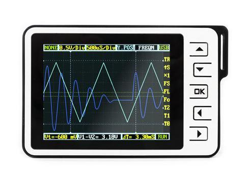
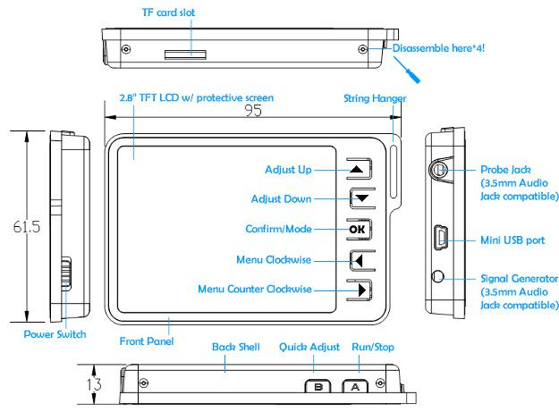
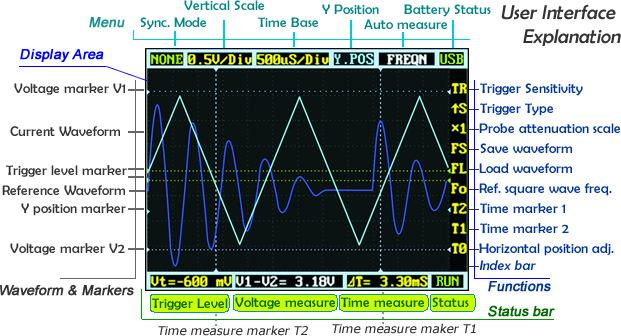
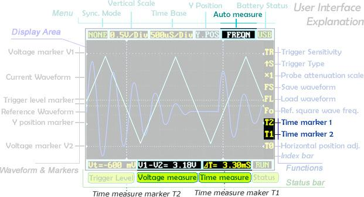
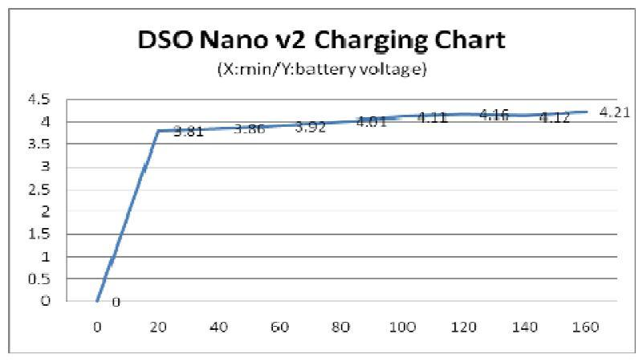
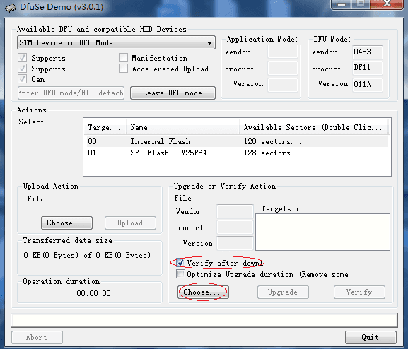

DSO Nano v2 is a Digital Storage Oscilloscope designed for basic electronic engineering tasks. The device runs on the ARM Cortex™-M3 32 bit platform, providing basic waveform monitoring with extensive functions. It features a 320 x 240 full-color TFT LCD, micro SD card storage slot, portable probes, LiPo Battery, USB connection and signal generator. Its palm size and handy features make it great for in-field diagnosis, quick measurement, and hobbyist projects. Schematics and source code files are also openly available for re-innovating.
This is an upgraded version of the previous Nano, with multiple improvements.
What’s new?
Model: TOL131B2P

The ground probe of the DSO Nano is connected directly to the ground line of the USB port. This means that, when using the Nano with a PC, the PC's ground will be tied to the measurement target's ground. Do not connect the Nano to a circuit and computer simultaneously unless the computer and circuit share a common ground.
| Display | Full Color 2.8" TFT LCD 65K 320×240 |
| Analog bandwidth | 0 - 200KHz |
| Max sample rate | 1Msps 12Bits |
| Sample memory depth | 4096 Point |
| Horizontal sensitivity | 1uS/Div~10S/Div |
| Horizontal position | adjustable with indicator |
| Vertical sensitivity | 10mV/Div~10V/Div (with ×1 probe) |
| 0.5V/Div~100V/Div (with ×10 probe) | |
| Vertical position | adjustable with indicator |
| Input impedance | >500K6 |
| Max input voltage | 80Vpp (by ×1 probe) |
| Coupling | DCs |
| Trig modes | Auto, Normal, Single, None, Scan and Fit |
| Rising/Falling edge/level trigger | |
| Trig level adjustable with indicator | |
| Trig sensitivity adjustable with indicator | |
| Waveform Functions | Auto measurement: frequency, cycle time, duty cycle, peak voltage, RMS voltage, Average voltage and DC voltage |
| Precise vertical measurement with markers | |
| Precise horizontal measurement with markers | |
| Hold/Run | |
| Signal Generator | 10Hz~1MHz square wave |
| Waveform storage | Micro SD card |
| PC connection via USB | as SD card reader |
| Upgrade | USB |
| Power supply | 500mAh 3.7V Lithium battery / USB |
| Dimension (w/o probe) | 95mm*62mm*13mm |
| Weight | 76 gram |

Left/Right buttons are mainly used to navigate through menu items. The selected menu item will be highlighted; its corresponding screen element will blink. Press UP/Down buttons to adjust. The OK button controls display/hide markers or confirm operations.
Pressing A (Run/Stop) Button once will freeze the current display. Press 'A' again to resume. The B (Shift) Button is used for quick functions.
Throughout this text, adjustable items will be labeled in red.

The screen is broken into a central display area and 3 operation bars around it. The menu on the top provides the most frequently-used adjustments to signal display. The status bar on the bottom provides precise measurement results and monitoring status. Adjust more advanced functions with the column of function icons on the right.
Move the cursor to the Vertical Scale and Time Base to start exploring the signal display. Press the up/down buttons to adjust the voltage/div or time/div. Each “div” is a grid unit "division" of the screen; count the divisions to estimate a quick measurement. The vertical scale ranges from 10mV/div to 10V/div. The time base ranges from 1uS/div to 10S/div. Beware that in the larger time bases the display may look frozen, since 10S/div means it takes 120 seconds to refresh whole the screen (12 divs wide).
The waveform might be out of the range of the display even in the appropriate voltage/div setting. You can change the Y position to move the waveform up and down to center the wave onscreen. The Y position marker indicates 0V for your reference.
Press button A to freeze the current display (setting the status to HOLD) and press again to resume refreshing (status RUN). With the status on HOLD, you can select the T0 icon and press the up/down buttons to pan back and forth. Press the OK button to display or hide the X position marker (a yellow dotted vertical line).
The Nano has six triggering modes, accessible in the top left corner of the screen. These are:
AUTO: Always refresh the display, and synchronize when triggered.
NORM (al): Display synchronized waveform when triggered, and blank if not triggering.
SING (le): Display triggered waveform and hold, then blank again before triggering.
SCAN: Repeatedly sweep waveform onscreen left to right.
NONE: Refresh unsynchronized waveform ignoring triggering.
FIT: Automatically adjust vertical and horizontal scale to display waveform.
| Mode | Trigger | Display Waveform | Synchronization | Example Applications |
|---|---|---|---|---|
| AUTO | Yes | Always | Yes | General use |
| NORM | Yes | Triggered | Yes | Only watch periodic signals |
| SING | Yes | Triggered | Auto-hold | Capture a random pulse |
| SCAN | No | Always | No | Keep monitoring signals |
| NONE | No | Always | No | Watch an unsynchronized waveform |
| FIT | Yes | Auto-adjust | Yes | Easily watch periodic signals |
To set the triggering level, move cursor to Vt = ??.?mV and press the up/down buttons. Press OK to display or hide the trigger level markers (horizontal green dotted lines). To fine tune triggering, you may tweak the trigger sensitivity range TR and the trigger type. By default the trigger type is set to up S which means the trigger will fire when the signal crosses from the lower trigger line to the higher line. Down S will likewise trigger on a falling signal edge.
This could prevent mistaken triggering caused by noise, especially while measuring fast low-amplitude signals. If you set the sensitivity to 0, where the two trigger level markers overlap each other, you get level triggering. Please refer to Wikipedia for more informaiton on oscilloscope triggering.

Auto measurement is useful for quickly exploring signal characteristics. Measurement options include frequency, cycle time, duty cycle, peak voltage, RMS voltage, average voltage and DC voltage. Please note that frequency, cycle time and duty cycle can only be measured while triggering.
To get a more precise measurement, use the measurement markers. T2 and T1 control the time markers, the two vertical dotted lines. A precise time difference between two marker positions is displayed in "time measure" near bottom of the screen. The V1 marker and V2 marker can be adjusted directly from the "voltage measure" result panel ("V1-V2=? V") at the bottom center of the screen.
Pressing the OK button in a menu item will hide or show the corresponding line onscreen.
Please note : For the device with firmware app2.6, it is not necessary to the execute the third step .
Waveforms can be saved to an SD card or loaded to the display. You need a microSD card to do this (not included). Please note that SDHC cards (high-speed cards larger than 2 GB) are not supported for now. Follow the below steps to set up your microSD card:
When the microSD card is prepared, the FS (file save) and FL (file load) icons are enabled. Press the OK button on FS to save a waveform, or on FL to load the waveform from the microSD card.
The 3.5mm audio jack under the mini USB port is used for the signal generator. It outputs a square wave from 10Hz to 1MHz. Frequency can be adjusted via Fo ("frequency out"). The peak voltage is the same as the supplied power, or approximately 3.7v if powered from battery, and 5v when powered by USB.
The DSO Nano can be powered by the internal 500mAh LiPo battery or by the external mini-USB port. Charging takes about 2 hours 20 minutes to reach 4.12V. A brand-new unit can only run about 1 hour by battery, but the battery life will be extended after the LiPo battery is fully charged.

1. Download "DfuSe USB Device Firmware Upgrade" and install . On Linux and Mac OS X you cuold use dfu-util(0.5 or newer).
2. Use USB cable connect DSO Nano with PC, press and hold down key, switch on power, untill DSO Nano displays "Please Connect to USB Host, DSO201 Device Firmware Upgarde Ver 2.0". If it is the first time connection, it will be prompted to install device drivers. You could find the corresponding driver in the "ST official development kit program" installation directory. In the default installation directory path"C:\ProgramFile\STMicroelectronics\Software\DfuSe\Driver\x86" When PC connection is detected, it will display "Firmware Upgrading...Please Wait".
3. Run "Dfuse Demo" on PC, check "Verify after download", check "Choose" to select firmware, check "Upgarde"to upload firmware.(e,g "DS0201_APP_V2.40.dfu"."DS0201_LIB_V2.2.dfu").Please note that both APP firmware and LIB firmware files needs to be programmed while upgarding.
4. Shut down and reactivate power to use new firmware.

1. Use USB cable connect DSO Nano with PC, press and hold down key, switch on power, DSO Nano will display "Device Firmware Upgrade V3.22A. Please copy Hex or Bin file to the DFU virtual USB disk". Wait till PC detects DFU virtual USB disk.
2. Download the DSO Nano firmware, copy both of hex files into DFU virtual USB disk(e.g"201AP263.hex"."LIB_A227.hex"). Wait till it change to "LIB_A227.err" and "201AP263.rdy".
3. Shut down and reactivate power to use new firmware.
Please note different device of Dfu corresponse different firmware , please download corresponsing firmware of your device in Resourses.
The maximum input voltage could be 80Vpp. So when using a 10x probe on the Nano DSO, it could be 800 Vpp. However, we did not test that, and we are not responsible for any damage and injury because of measuring high voltage.
Firmware for APP Ver2.4 and APP Ver2.6 are different files in format. Firmware for APP Ver2.4 of LIB format suffixe is compatible with Nano which with DFU Ver2.0. Firmware for APP Ver2.6 of HEX format suffixe is compatible with Nano which with DFU Ver3.0. Besides, APP Ver2.6 is more humanized, you could directly save wavaform to SD Card as file in DAT format or PNG format.
Please note that firmwares on the above link is only support DSO Nano with DFU Ver3.0 , don't use this firmware to upgrade DSO Nano with DFU Ver2.0 or lower.
This documentation is licensed under the Creative Commons Attribution-ShareAlike License 3.0 Source code and libraries are licensed under GPL/LGPL, see source code files for details.